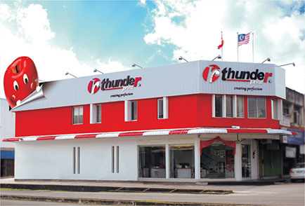
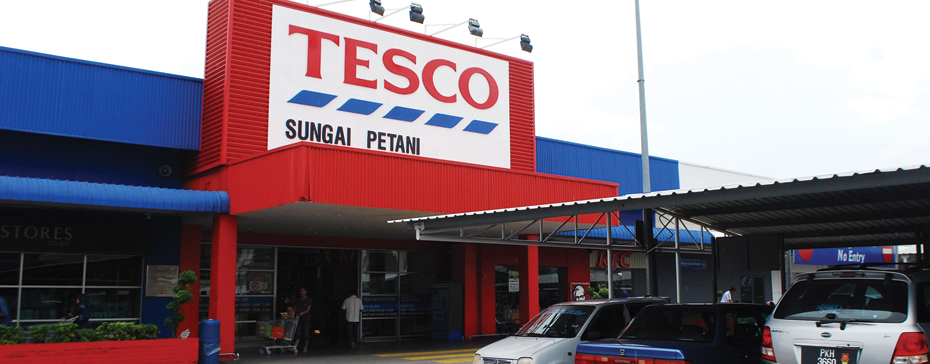

bOnJoUr, im wanie:))
~nothing ever becomes real until it is experienced~

OPERATOR (THUNDER PRINT SDN BHD).
- use equipment to assist with manufacturing, packaging, and other steps along to production line
- works along and assembly path performing a specialized task that helps move a good towards the consumer market
- i starting to works at Thunder Print after spm in december 2017 until may 2018

SERVICE CREW (TESCO SUNGAI PETANI UTARA)
- stock work and customers area with needed supplies, such as napkins, condiments and cleaning supplies and notify management when inventory levels begin to run low
- process, cash, check and credit card payment using cash registers and digital systems
- i started to work as service crew at Restoran Utara Dijaya, Tesco Sungai Petani Utara when semester break in january 2019 until mac 2019